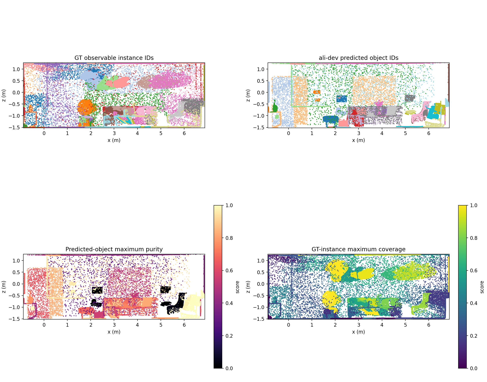
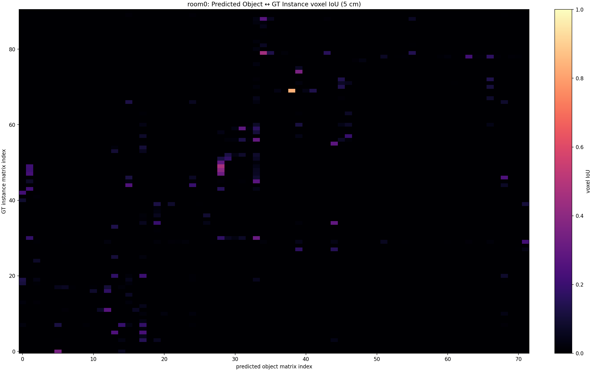
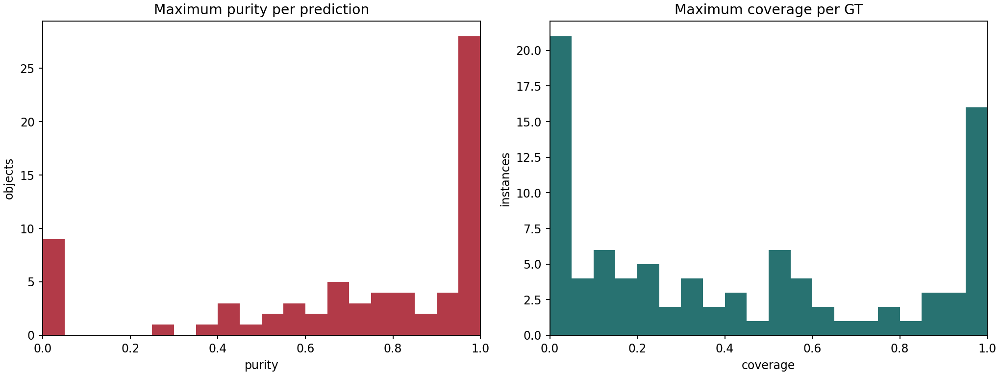
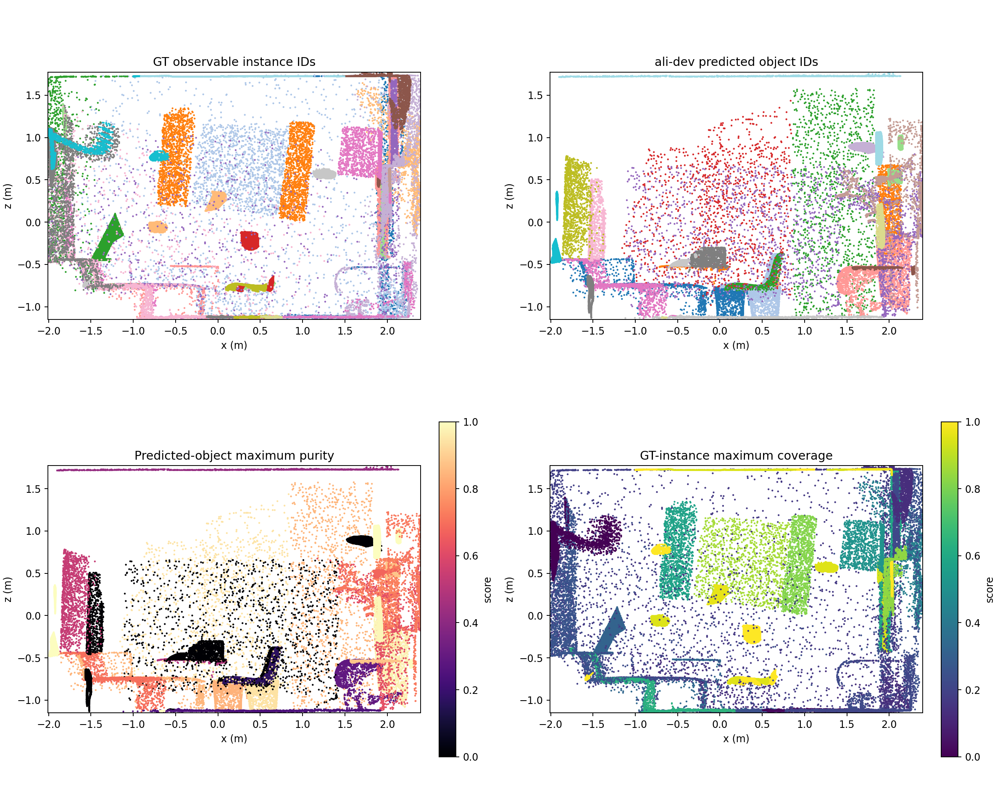
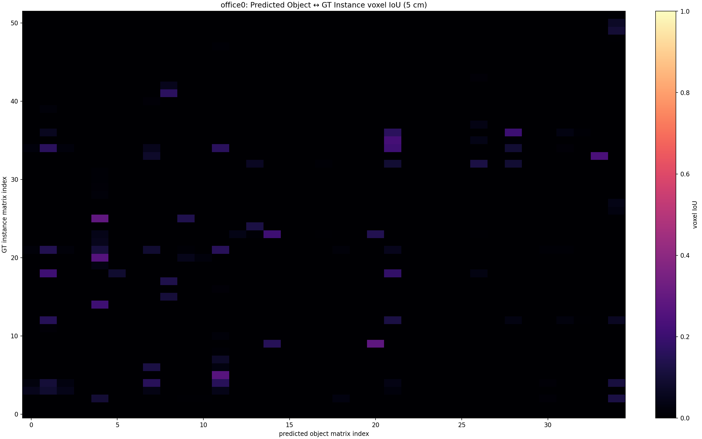
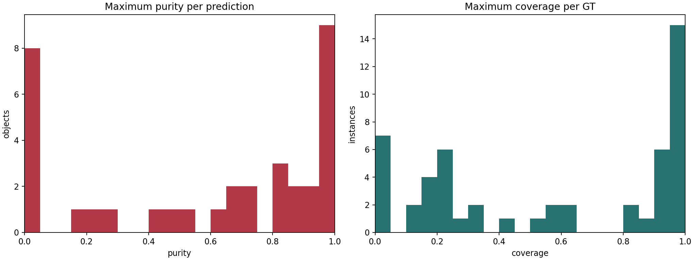

Continuous measurements at 5 cm. Colors and Top-20 lists are diagnostic views, not frozen error labels.
Frozen maps: 72 predictions, 91 observable GT instances.



| predicted_index | predicted_label | maximum_purity | best_gt_instance_id | best_gt_label | overlap_gt_count_purity_0p01 |
|---|---|---|---|---|---|
| 3 | lamp | 0.0 | 0 | ||
| 49 | pillow | 0.0 | 0 | ||
| 50 | pillow | 0.0 | 0 | ||
| 52 | lamp | 0.0 | 0 | ||
| 57 | book | 0.0 | 0 | ||
| 62 | book | 0.0 | 0 | ||
| 4 | end table | 0.007692307692307693 | 11 | table | 0 |
| 47 | chair | 0.025 | 64 | vent | 1 |
| 48 | armchair | 0.033760186263096625 | 64 | vent | 1 |
| 17 | lamp | 0.29284649776453053 | 9 | sofa | 19 |
| 39 | blinds | 0.39192795196797864 | 15 | blinds | 10 |
| 33 | pillow | 0.4222111055527764 | 11 | table | 24 |
| 44 | ceiling | 0.4316327941379787 | 33 | wall | 5 |
| 12 | cabinet | 0.4346829640947288 | 40 | lamp | 4 |
| 19 | ceiling | 0.4829443447037702 | 33 | wall | 7 |
| 43 | potted plant | 0.5224719101123596 | 78 | lamp | 3 |
| 13 | poster | 0.5268714011516314 | 9 | sofa | 6 |
| 27 | paper bag | 0.5569620253164557 | 88 | ceiling | 1 |
| 34 | coffee table | 0.5710491367861886 | 78 | lamp | 6 |
| 46 | radiator | 0.5786026200873362 | 74 | chair | 5 |
| gt_instance_id | gt_label | maximum_coverage | best_predicted_index | best_predicted_label | overlap_prediction_count_coverage_0p01 |
|---|---|---|---|---|---|
| 3 | book | 0.0 | 0 | ||
| 4 | book | 0.0 | 0 | ||
| 5 | cushion | 0.0 | 0 | ||
| 13 | cushion | 0.0 | 0 | ||
| 23 | wall | 0.0 | 0 | ||
| 30 | blinds | 0.0 | 0 | ||
| 37 | undefined | 0.0 | 0 | ||
| 45 | vase | 0.0 | 0 | ||
| 62 | window | 0.0 | 0 | ||
| 65 | plate | 0.0 | 0 | ||
| 67 | undefined | 0.0 | 0 | ||
| 79 | candle | 0.0 | 0 | ||
| 85 | book | 0.0 | 0 | ||
| 87 | lamp | 0.0 | 0 | ||
| 90 | book | 0.0 | 0 | ||
| 91 | window | 0.0 | 0 | ||
| 93 | table | 0.0 | 0 | ||
| 58 | blinds | 0.009596928982725527 | 15 | sofa chair | 0 |
| 29 | window | 0.01568627450980392 | 24 | end table | 2 |
| 34 | blinds | 0.01818181818181818 | 34 | coffee table | 1 |
| predicted_index | predicted_label | maximum_purity | best_gt_instance_id | best_gt_label | overlap_gt_count_purity_0p01 |
|---|---|---|---|---|---|
| 33 | pillow | 0.4222111055527764 | 11 | table | 24 |
| 17 | lamp | 0.29284649776453053 | 9 | sofa | 19 |
| 15 | sofa chair | 0.9558823529411765 | 75 | basket | 12 |
| 39 | blinds | 0.39192795196797864 | 15 | blinds | 10 |
| 28 | pillow | 0.9081081081081082 | 43 | pot | 10 |
| 1 | pillow | 0.9114583333333334 | 12 | book | 10 |
| 24 | end table | 1.0 | 75 | basket | 10 |
| 68 | end table | 0.8695652173913043 | 86 | blanket | 9 |
| 19 | ceiling | 0.4829443447037702 | 33 | wall | 7 |
| 66 | floor | 0.7919320594479831 | 83 | lamp | 7 |
| 31 | pillow | 0.9434782608695652 | 72 | cushion | 7 |
| 13 | poster | 0.5268714011516314 | 9 | sofa | 6 |
| 34 | coffee table | 0.5710491367861886 | 78 | lamp | 6 |
| 2 | stool | 0.6786632390745502 | 68 | vent | 6 |
| 45 | coffee table | 0.7315789473684211 | 21 | blinds | 6 |
| 0 | stool | 0.7936046511627907 | 49 | lamp | 6 |
| 30 | pillow | 1.0 | 35 | indoor-plant | 6 |
| 44 | ceiling | 0.4316327941379787 | 33 | wall | 5 |
| 46 | radiator | 0.5786026200873362 | 74 | chair | 5 |
| 12 | cabinet | 0.4346829640947288 | 40 | lamp | 4 |
| gt_instance_id | gt_label | maximum_coverage | best_predicted_index | best_predicted_label | overlap_prediction_count_coverage_0p01 |
|---|---|---|---|---|---|
| 88 | ceiling | 0.22388448029140107 | 71 | blinds | 12 |
| 83 | lamp | 0.21596724667349027 | 63 | end table | 11 |
| 73 | chair | 0.5008902077151335 | 33 | pillow | 7 |
| 48 | wall | 0.12766524520255865 | 12 | cabinet | 6 |
| 89 | wall | 0.21163279607568325 | 39 | blinds | 6 |
| 25 | floor | 0.3191662154845696 | 14 | closet door | 6 |
| 77 | sofa | 0.5492629945694336 | 33 | pillow | 6 |
| 11 | table | 0.7383966244725738 | 33 | pillow | 6 |
| 57 | wall | 0.12987630827783064 | 0 | stool | 5 |
| 22 | blinds | 0.35834896810506567 | 34 | coffee table | 5 |
| 33 | wall | 0.46743524479712534 | 44 | ceiling | 5 |
| 78 | lamp | 0.7687747035573123 | 34 | coffee table | 5 |
| 26 | window | 0.16443594646271512 | 45 | coffee table | 4 |
| 32 | cushion | 0.28365384615384615 | 15 | sofa chair | 4 |
| 39 | stool | 0.3285198555956679 | 68 | end table | 4 |
| 86 | blanket | 0.4109014675052411 | 68 | end table | 4 |
| 40 | lamp | 0.5069967707212056 | 12 | cabinet | 4 |
| 60 | rug | 0.5150571131879543 | 17 | lamp | 4 |
| 6 | lamp | 0.6012601260126013 | 17 | lamp | 4 |
| 72 | cushion | 0.806146572104019 | 31 | pillow | 4 |
Frozen maps: 35 predictions, 52 observable GT instances.



| predicted_index | predicted_label | maximum_purity | best_gt_instance_id | best_gt_label | overlap_gt_count_purity_0p01 |
|---|---|---|---|---|---|
| 3 | chair | 0.0 | 0 | ||
| 15 | refrigerator | 0.0 | 0 | ||
| 16 | potted plant | 0.0 | 0 | ||
| 22 | power outlet | 0.0 | 0 | ||
| 23 | paper bag | 0.0 | 0 | ||
| 24 | power outlet | 0.0 | 0 | ||
| 25 | tissue box | 0.0 | 0 | ||
| 27 | book | 0.0 | 0 | ||
| 8 | chair | 0.1657142857142857 | 35 | panel | 4 |
| 26 | floor | 0.23980978260869565 | 0 | unknown | 6 |
| 13 | stuffed animal | 0.2903930131004367 | 63 | floor | 4 |
| 34 | ceiling | 0.4196621914248592 | 24 | wall | 7 |
| 5 | coffee table | 0.48936170212765956 | 51 | wall | 1 |
| 28 | window | 0.5384087791495199 | 9 | sofa | 5 |
| 14 | potted plant | 0.6192893401015228 | 5 | rug | 2 |
| 19 | potted plant | 0.673469387755102 | 4 | chair | 2 |
| 21 | sofa chair | 0.6955995155429956 | 7 | sofa | 9 |
| 20 | potted plant | 0.7165109034267912 | 44 | desk-organizer | 2 |
| 4 | tv | 0.741027445460943 | 12 | table | 10 |
| 0 | trash bin | 0.8373205741626795 | 61 | chair | 4 |
| gt_instance_id | gt_label | maximum_coverage | best_predicted_index | best_predicted_label | overlap_prediction_count_coverage_0p01 |
|---|---|---|---|---|---|
| 1 | anonymize_text | 0.0 | 0 | ||
| 15 | blinds | 0.0 | 0 | ||
| 27 | wall-plug | 0.0 | 0 | ||
| 28 | tissue-paper | 0.0 | 0 | ||
| 29 | undefined | 0.0 | 0 | ||
| 16 | door | 0.0012376237623762376 | 26 | floor | 0 |
| 18 | wall | 0.0196078431372549 | 26 | floor | 1 |
| 61 | chair | 0.127208480565371 | 1 | sofa chair | 6 |
| 42 | undefined | 0.1312803889789303 | 34 | ceiling | 1 |
| 4 | chair | 0.16159070990359334 | 11 | picture | 9 |
| 10 | ceiling | 0.167267483777938 | 7 | closet door | 8 |
| 24 | wall | 0.17125890736342042 | 34 | ceiling | 4 |
| 8 | wall | 0.18840579710144928 | 1 | sofa chair | 5 |
| 0 | unknown | 0.21043577981651376 | 26 | floor | 5 |
| 3 | anonymize_picture | 0.2164009111617312 | 4 | tv | 1 |
| 63 | floor | 0.22429906542056074 | 13 | stuffed animal | 1 |
| 58 | table | 0.23121309715512614 | 21 | sofa chair | 8 |
| 5 | rug | 0.24227714033539277 | 14 | potted plant | 5 |
| 19 | bin | 0.24242424242424243 | 26 | floor | 1 |
| 9 | sofa | 0.26223776223776224 | 28 | window | 4 |
| predicted_index | predicted_label | maximum_purity | best_gt_instance_id | best_gt_label | overlap_gt_count_purity_0p01 |
|---|---|---|---|---|---|
| 11 | picture | 0.9443021766965429 | 14 | undefined | 11 |
| 4 | tv | 0.741027445460943 | 12 | table | 10 |
| 21 | sofa chair | 0.6955995155429956 | 7 | sofa | 9 |
| 1 | sofa chair | 0.8454198473282443 | 51 | wall | 9 |
| 34 | ceiling | 0.4196621914248592 | 24 | wall | 7 |
| 7 | closet door | 0.844559585492228 | 10 | ceiling | 7 |
| 26 | floor | 0.23980978260869565 | 0 | unknown | 6 |
| 28 | window | 0.5384087791495199 | 9 | sofa | 5 |
| 8 | chair | 0.1657142857142857 | 35 | panel | 4 |
| 13 | stuffed animal | 0.2903930131004367 | 63 | floor | 4 |
| 0 | trash bin | 0.8373205741626795 | 61 | chair | 4 |
| 9 | speaker | 0.8823529411764706 | 12 | table | 4 |
| 2 | trash bin | 0.937799043062201 | 61 | chair | 4 |
| 6 | power outlet | 1.0 | 10 | ceiling | 4 |
| 31 | pillow | 1.0 | 9 | sofa | 4 |
| 32 | person | 1.0 | 9 | sofa | 4 |
| 30 | person | 0.9805825242718447 | 10 | ceiling | 3 |
| 10 | picture | 1.0 | 66 | tv-screen | 3 |
| 33 | speaker | 1.0 | 17 | vent | 3 |
| 14 | potted plant | 0.6192893401015228 | 5 | rug | 2 |
| gt_instance_id | gt_label | maximum_coverage | best_predicted_index | best_predicted_label | overlap_prediction_count_coverage_0p01 |
|---|---|---|---|---|---|
| 4 | chair | 0.16159070990359334 | 11 | picture | 9 |
| 10 | ceiling | 0.167267483777938 | 7 | closet door | 8 |
| 58 | table | 0.23121309715512614 | 21 | sofa chair | 8 |
| 61 | chair | 0.127208480565371 | 1 | sofa chair | 6 |
| 8 | wall | 0.18840579710144928 | 1 | sofa chair | 5 |
| 0 | unknown | 0.21043577981651376 | 26 | floor | 5 |
| 5 | rug | 0.24227714033539277 | 14 | potted plant | 5 |
| 24 | wall | 0.17125890736342042 | 34 | ceiling | 4 |
| 9 | sofa | 0.26223776223776224 | 28 | window | 4 |
| 51 | wall | 0.3319268635724332 | 1 | sofa chair | 4 |
| 66 | tv-screen | 0.5917843388960206 | 4 | tv | 4 |
| 7 | sofa | 0.6317335945151812 | 21 | sofa chair | 3 |
| 64 | tablet | 0.3142857142857143 | 1 | sofa chair | 2 |
| 44 | desk-organizer | 0.42884990253411304 | 20 | potted plant | 2 |
| 17 | vent | 0.5133928571428571 | 33 | speaker | 2 |
| 21 | lamp | 0.8151658767772512 | 7 | closet door | 2 |
| 12 | table | 0.8342857142857143 | 4 | tv | 2 |
| 52 | other-leaf | 1.0 | 1 | sofa chair | 2 |
| 18 | wall | 0.0196078431372549 | 26 | floor | 1 |
| 42 | undefined | 0.1312803889789303 | 34 | ceiling | 1 |